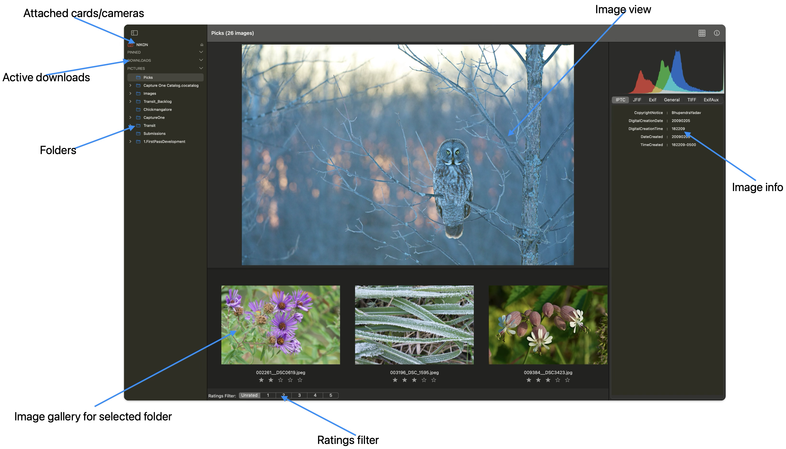
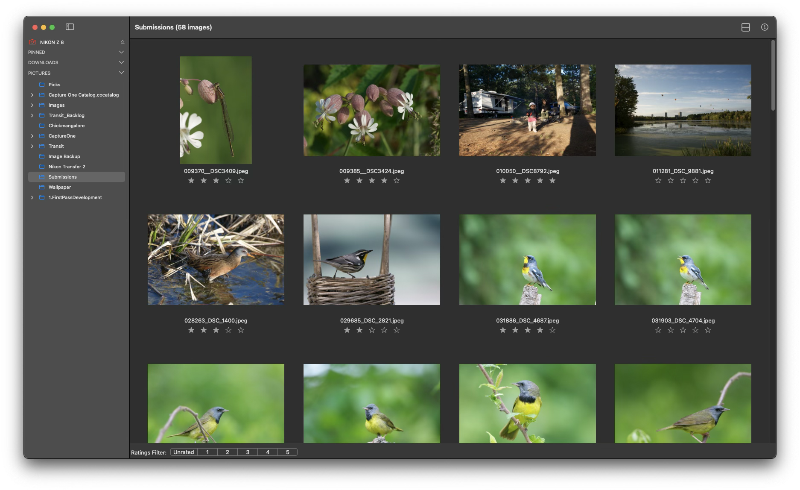
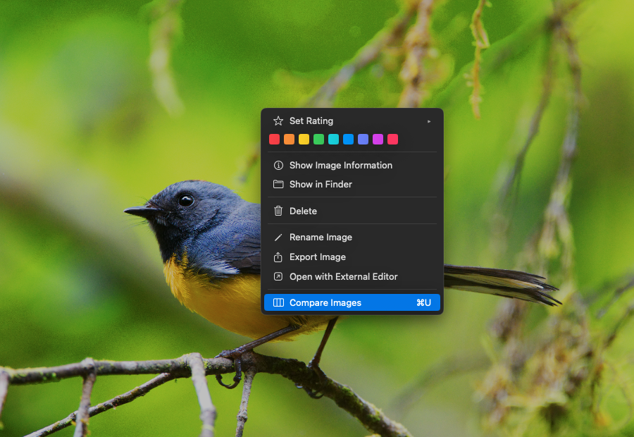
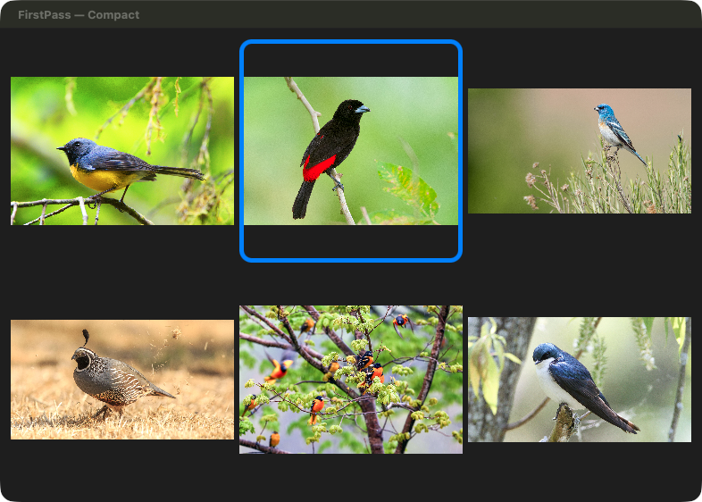
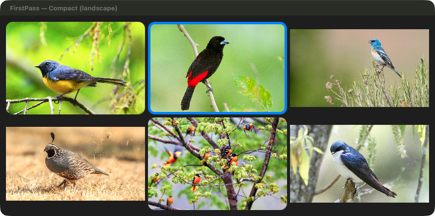
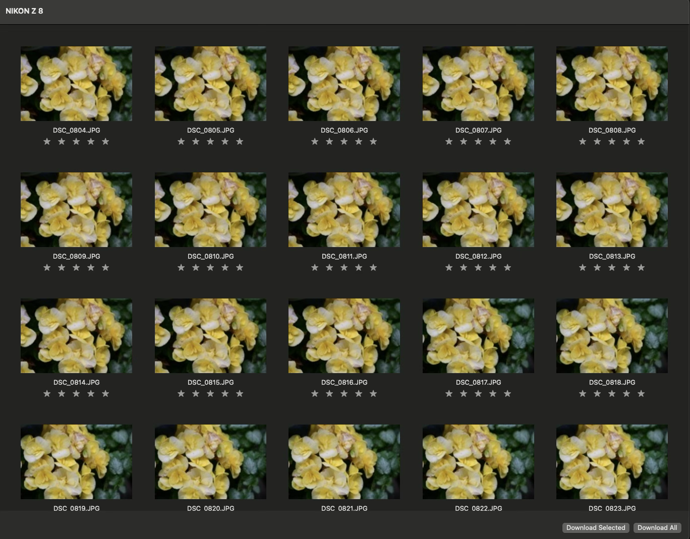
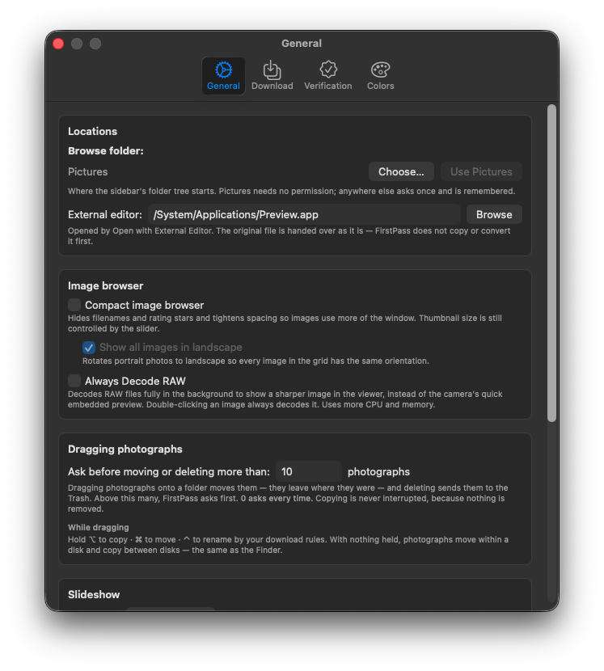
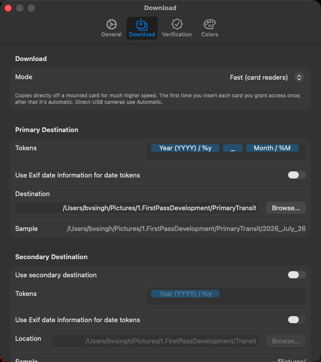
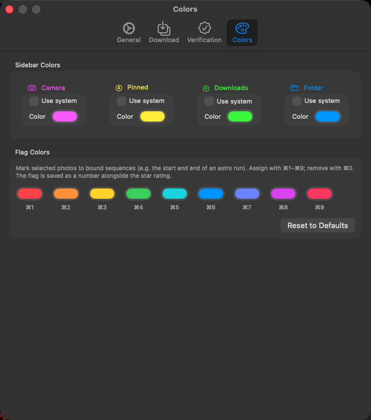
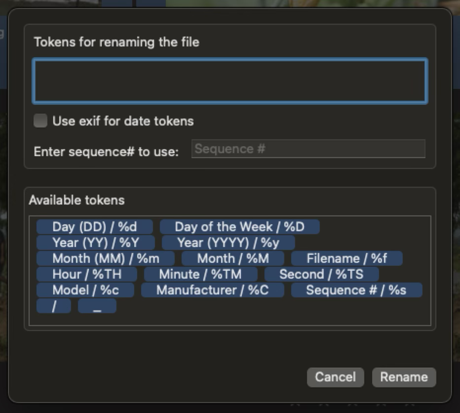

FirstPass User Manual
Objective
Downloading thousands of photographs from multiple memory cards can be a considerable challenge, particularly as each card must be downloaded individually, even when using several card readers. Furthermore, the initial editing process — rating, deleting, and detailed viewing — demands substantial time and effort. This software is specifically designed to assist photographers in reducing this workload by significantly expediting both the downloading process and the first pass edit, all within a single application.
This version of FirstPass has been re-imagined using SwiftUI and Swift.
Requirements: The current release is version 1.7.1, available on the Mac App Store and requiring macOS 14.6 or later. This release adds checksum-verified copying, transfer reports and Fast card ingest, all described below.
Unique features of FirstPass
Every copy is verified before the card is released — by size, or by a full content checksum.
Writes a transfer report for the job: a CSV manifest, a PDF summary, or an ASC MHL sidecar.
Two download paths: Fast reads a mounted card directly, and Automatic drives any camera over PTP.
Files are filed by their own capture date, camera make and model — read from each file, not from the clock.
The first Mac App Store application to enable image download from multiple sources to multiple destinations.
Works with shared devices to enable download over a network.
Provides a fast and clean interface to do a “first pass” editing of images.
Frees up the user’s time by handling multiple downloads at the same time without requiring the user to swap the cards in and out of a card reader or starting the download manually for each card.
Can be configured to automatically start downloading when a device (or multiple devices) are plugged in.
Quick start guide
FirstPass has a single window type. User can create multiple windows and can browse different folders or download different cards. Same window can also be used to download multiple cards, each download triggered sequentially.

Settings Window
The Settings window (⌘,) configures how images are downloaded, how each copy is verified, and how the app looks. It is worth setting up the Download and Verification tabs before your first import — they decide where your files land and how thoroughly each copy is checked. Every tab is described in full under Settings below.
Parts of Main Window
Sidebar

User can hide the sidebar using Hide Sidebar menu option or the Sidebar toggle button in the tool bar.
Image Gallery

Context Menu
Right clicking on an image provides a context menu. Using this context menu users can change rating, set a colour flag, compare a selection of similar images, show/hide the image information inspector, view the image in Finder, delete the image, rename the image and open with an external editor. External editor can be set in settings.

Sorting
Images in the gallery can be sorted in ascending or descending order using creation date, name or rating as the key. This can be done via Browser menu option.
Image Information
Image information is shown in an inspector. Can be enabled using the context menu on the image or by selecting an image and clicking on the toolbar item.
Ratings Filter
Rating filter is on the bottom left of the gallery. There are six buttons — unrated and rating from 1 to 5. Clicking on any button filters out that rating.
Colour Flags
In addition to 0–5 star ratings, each image can be marked with one of nine colour flags. Set a flag from the right-click context menu, or press ⌘1 through ⌘9; ⌘0 clears it. The nine flag colours can be customised in the Colours tab of Settings, and the flag is shown on the image in the gallery.

Selecting Multiple Images
Several images can be selected at once for rating, flagging, renaming or comparison. Use ⌘-click to add or remove individual images, Shift-click to select a range, and Shift with the arrow keys to extend the selection from the keyboard.
Compare Similar Images
New in version 1.7.1.
When several frames are near-identical — for example a burst, or several attempts at the same shot — it helps to view them together to keep only the best. Select between two and six images and choose Compare Images (⌘U) from the View menu, or from the right-click context menu. The selected images are tiled side-by-side and zoom and pan in unison, so you are always looking at the same part of every frame at the same time — ideal for judging critical focus and sharpness.

While comparing, you can rate an image, set a colour flag, or remove a frame from the comparison, all without leaving the view. Press Escape or Done to return to the gallery.
Browsing Sub-folders
By default a folder shows only the images it directly contains. Turn on Include Sub-folders in the Browser menu to browse a folder together with all of the images inside its sub-folders in a single gallery.
Slideshow
A full-screen slideshow of the current selection is available from the View menu, for reviewing images on a larger canvas.
Compact Image Browser
Compact image browser, enabled in the General tab of Settings, hides the filenames and rating stars and tightens the spacing so the photos themselves use more of the window — useful for a fast visual pass. The thumbnail size is still controlled by the gallery slider.

Turn on Show all images in landscape as well and portrait photos are rotated to landscape, so every cell in the grid shares the same orientation for a tidy, uniform layout.

Camera Window

When a camera is selected in the sidebar its images are shown in the main browser window. On the bottom left there are two buttons to download selected or download all images.
Settings
Settings are organised into four tabs — General, Download, Verification and Colors. It is worth configuring Download and Verification before your first import, because they decide where your files land and how thoroughly each copy is checked.
General

External editor — the application opened by “Open with external editor”. Use Browse to pick any app; Preview is a sensible default.
Compact image browser — hides filenames and rating stars and tightens the spacing so images use more of the window. Thumbnail size is still controlled by the slider in the gallery.
Show all images in landscape — available while compact mode is on. Rotates portrait photos so every cell in the grid has the same orientation and the rows pack tightly.
Always Decode RAW — decodes RAW files fully in the background so the viewer shows a sharper image instead of the camera’s quick embedded preview. Double-clicking an image always decodes it. Uses more CPU and memory.
Slideshow → Transition — None, Crossfade or Slide between images.
Slideshow → Time on each slide — how long each image is shown while the slideshow auto-advances, from 0.5 to 60 seconds.
Download

This tab decides how files come off the card and where they go. The Sample line under each destination shows the exact folder your next import would use, so you can check a token pattern before committing to it.
Mode → Automatic — drives the camera over PTP. Works with any camera, whether connected directly or through a card reader, and never asks for permission. Slower on a large card.
Mode → Fast (card readers) — copies straight off a mounted card’s filesystem, which is considerably quicker. The first time you insert each card, macOS asks you to grant access to it once; after that the card is remembered. Direct-USB cameras fall back to Automatic on their own.
Primary Destination → Tokens — the folder structure built for each import. Drag tokens (year, month, day, camera make, camera model) into the row and add your own literal text such as an underscore.
Primary Destination → Use Exif date information for date tokens — resolves date tokens from each photo’s own capture time rather than the date of the import. Leave this on: a card imported a week after the shoot then still files under the day it was shot.
Primary Destination → Destination — the folder your images are copied into. Use Browse to choose it.
Secondary Destination → Use secondary destination — writes a second copy of every image in the same pass, so a backup exists before the card leaves the reader. It has its own tokens and location, and shares the primary’s filenames.
Filename — the token pattern used to rename images as they are copied. Sequence, date, camera and original-name tokens can be combined with literal text.
Sequence Number — the running number used by the sequence token. It advances one per image, persists between sessions, and can be reset here.
Available Tokens — the palette of tokens to drag into the rows above.
Note: Destination tokens build folders; the sequence-number token belongs in the filename, not in a folder name.
Verification

A plain file copy assumes it worked. This tab decides how thoroughly FirstPass checks each copy before releasing the card, what record it leaves behind, and what happens the moment a card is connected.
Verify copies by → Size — a fast sanity check that the bytes written match the bytes the camera reported.
Verify copies by → Checksum — compares a content hash of the source against every copy written. Far stronger, and slower. The two modes are mutually exclusive.
Generate transfer report — writes a record of the job to the destination disk when the copy finishes.
CSV manifest — one row per copy, with source, destination, size and verification result.
PDF report — the same information as a readable summary for a production or a client.
ASC MHL (Media Hash List) — the industry-standard hash manifest. It records a content hash, so it is only available in Checksum mode.
On Card Connect → Start downloading automatically — begins the import the moment a card is connected, with no further action from you.
On Card Connect → Eject card after download completes — unmounts the card once the import has finished and verified.
Note: Starting automatically is unavailable in Fast mode, and the setting is shown greyed out with an explanation. A card’s one-time access grant cannot be given while nobody is watching. Your preference is remembered and applies again as soon as you return to Automatic mode.
Note: Whatever you choose here, a file that fails verification is copied again automatically, and anything that still fails is reported rather than counted as a success.
Colors

Sidebar Colors — the icon colour for each kind of sidebar row: Camera, Pinned, Downloads and Folder. Tick Use system to follow the system accent instead of a fixed colour.
Flag Colors — the nine colour flags assigned with ⌘1–⌘9 and removed with ⌘0. Click a swatch to change it. A flag is stored as a number alongside the star rating, so recolouring the palette re-colours every image already flagged with that slot.
Reset to Defaults — restores the shipped palette.
File Renaming
Along with renaming files while they are being downloaded from a camera or a card, they can also be renamed while viewing them in gallery. This does not move the files to a different folder, just renames them in place. User can use all the same tokens as used for files while downloading from a camera or a card.
In the image gallery user can select a few images and right click to bring up the renaming panel. User can provide tokens, specify which date to use if the date tokens are used and provide a starting sequence number if renamed files result in name conflicts.

Note: After entering each word user must press enter to tokenize it. All known tokens should be dragged from collection to the renaming field.
Verifying copies
A plain file copy assumes it worked. FirstPass checks. Every file written is verified before the card is released, and anything that fails is re-copied automatically; whatever still fails is reported rather than quietly counted as a success.
Size — a fast sanity check that the bytes written match the bytes the camera reported.
Checksum — a content hash of the source compared against every copy written. Slower, and far stronger.
The two are mutually exclusive; choose one under Settings → Verification.
Transfer reports
For work that needs a paper trail, FirstPass writes a report of the job to the destination disk when the copy finishes. Enable the formats you need under Settings → Verification.
CSV manifest — one row per copy, with source, destination, size and verification result.
PDF report — the same information as a readable summary for a production or client.
ASC MHL — the industry-standard media hash list sidecar. It records a content hash, so it needs Checksum verification.
Fast and Automatic downloads
FirstPass can take files off a card two ways, chosen under Settings → Download.
Automatic — drives the camera over PTP. Works with any camera, whether connected directly or through a card reader, and never asks for permission. Slower on a large card.
Fast — copies straight off a mounted card’s filesystem, which is far quicker. The first time you insert each card, macOS asks you to grant access to it once; after that the card is remembered.
Note: Because a card’s one-time access grant cannot be given while nobody is watching, Fast mode and “start downloading automatically” cannot both be on. Your automatic-start preference is remembered and applies again in Automatic mode.
Note: Cards and cameras are browsed read-only: FirstPass never writes ratings or any other file back to a card, so nothing on the card is modified before it is copied.
Where your files land
Destination folders and filenames are built from tokens, and the date tokens resolve from each file’s own capture time — not from the day you happen to be importing. A card ingested a week after the shoot still files under the day it was shot. Where a file carries no capture date at all, the date the camera wrote the file is used instead.